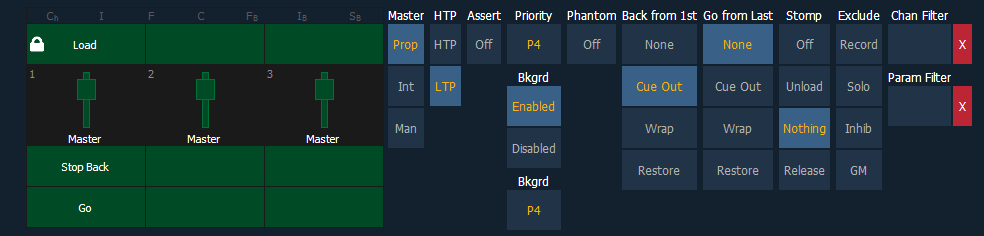

When the cue list index is open, the cue list properties dialogue box will display in the CIA. The cue list properties determine how the cue list will interact.
On Element 2, the cue list cannot be assigned to a fader. These settings will only impact the master fader pair.

Cue list properties include:
Faders can be mapped to a cue list in the fader configuration display or by using [Load], see Selected Cue for more information. If a fader has been configured for default mapping ( see Fader Configuration for more information), the fader will receive its configuration from the Cue List Index. Changes made to a cue list in the cue list index will be shared with any default mapping faders loaded with that cue list. If changes are made to a fader set to default mapping in the fader configuration display, those changes will also happen in the Cue List Index. If set to Local, any changes made in the fader configuration display will impact only that instance of the content.
A fader can be assigned as a Master. When it is a master, its behavior as a Proportional Master, Manual Master or Intensity Master (I-Master) is drawn from this setting.
Intensity playback behavior can be set to HTP (highest takes precedence) or LTP (latest takes precedence). For cues, it defaults to LTP.
Assert can be turned on or off at the fader level. This property sets the entire cue list to be asserted on playback (even track instructions are replayed).
Note: Priority was previously called Independent.
Priority is used to protect values from being affected by submasters or playback faders that have a lower priority level. They will, however, still be impacted by manual control, grandmaster, blackout, park instructions, or other playback faders and submasters at the same or higher priority.
There are 10 levels of Priority that cue lists can have. 1 is the lowest level and 10 is the highest. The default priority level is 4.
Background can be enabled or disabled at the fader level. When enabled, the content of the cue list will act as a background or previous state for other cues and submasters. When a cue list has its background state disabled, a “D” will display in the Cue List Index background column.
Background can have a priority assigned to it.
In previous software releases, when content was released, it always returned to the last fader that owned it. Background priority releases to the highest priority content that previously had ownership, provided that content has not be turned off or released.
There are 10 levels of background priority. 1 is the lowest level and 10 is the highest. The default background priority level is 4.
When a cue list is set to Phantom, pressing [Go] will not change the selected cue on the command line, or an unlocked playback status display.
Back From First controls the behavior that happens when you press the [Back] button while in the first cue.
The following are Back From First options:
Go From Last controls the behavior that happens when you press the [Go] button while in the last cue.
The following are Go From Last options:
Stomp refers to when all the content owned by a cue is now being controlled by other targets. The cue is being removed from the background, and once that happens, it would not be eligible to fade back. You can assign behavior that will happen when a cue is stomped.
The following are Stomp Mode options:
Those exclusions include:
Channel and Parameter Filters can be used to allow only specified data to be played back. These are playback filters, and do not impact how data is recorded.
For cue lists, channel and parameter filters can be set in the following areas:
Tap or click on {Chan Filter} to assign channels or groups. Tap or click on {Param Filter} to open a list of available parameters that you can filter.
Note: Filters will travel with their assigned cue lists wherever they are mapped.
When a filter has been applied, an indicator will display in the fader ribbon. C will display for channel filter, and F is for parameter filter.
Press the red [X] to clear the channel or parameter filters listed.